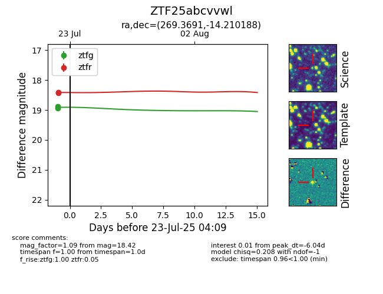

Target ZTF25abcvvwl at 2025-07-23 12:37, see:
FINK: fink-portal.org/ZTF25abcvvwl
Lasair: lasair-ztf.lsst.ac.uk/objects/ZTF25abcvvwl
ALeRCE: alerce.online/object/ZTF25abcvvwl
alt names
ZTF25abcvvwl (ztf,fink)
coordinates:
equatorial (ra, dec) = (269.3691,-14.21019)
galactic (l, b) = (14.0946,+5.12512)
photometry
last ztfg=18.89, ztfr=18.42
2 ztfg, 2 ztfr detections
